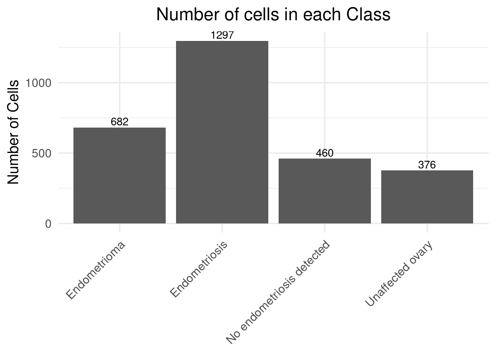
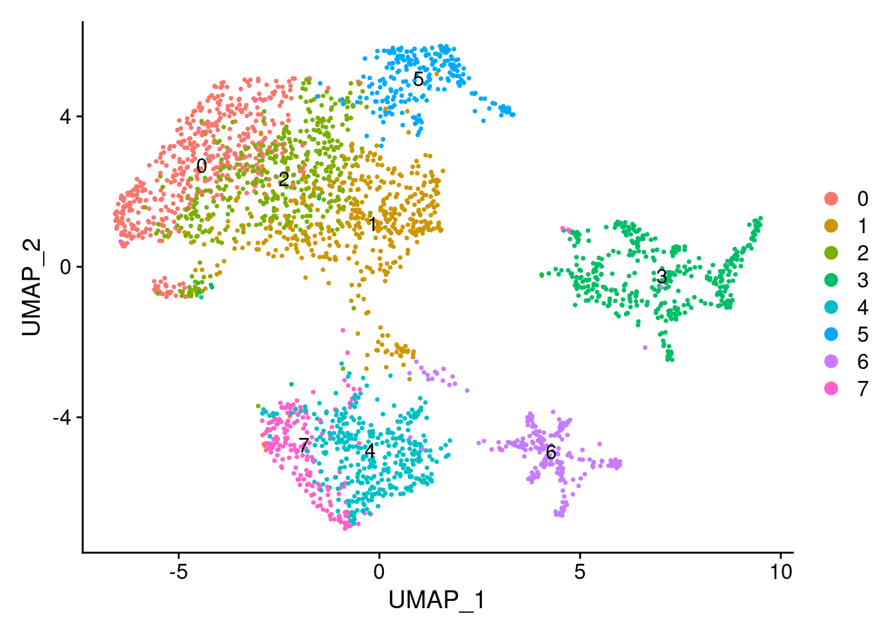
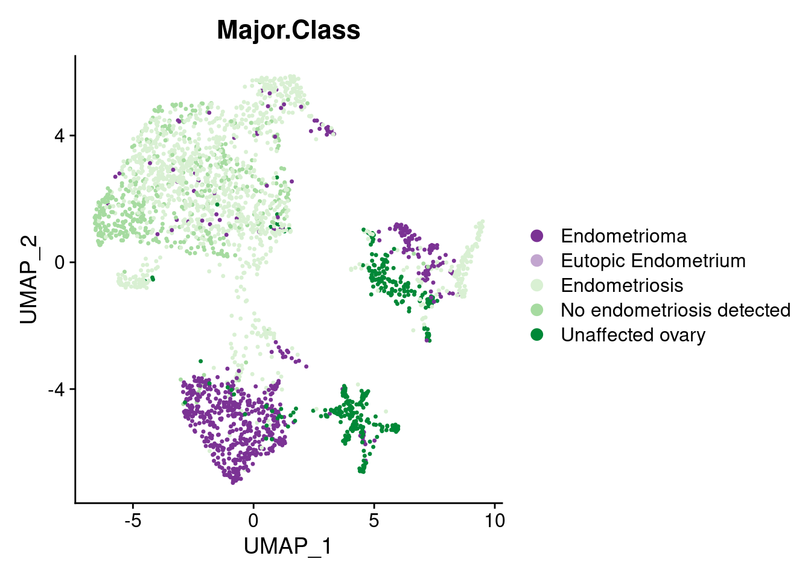
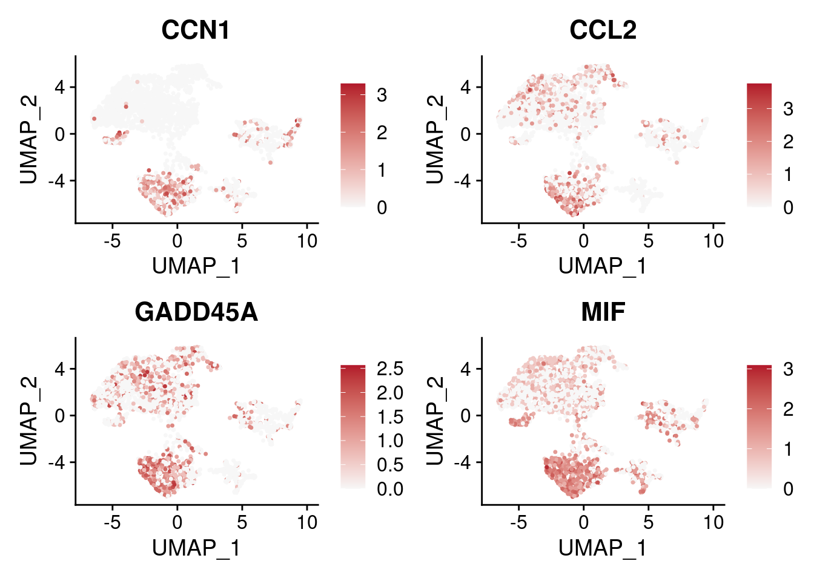
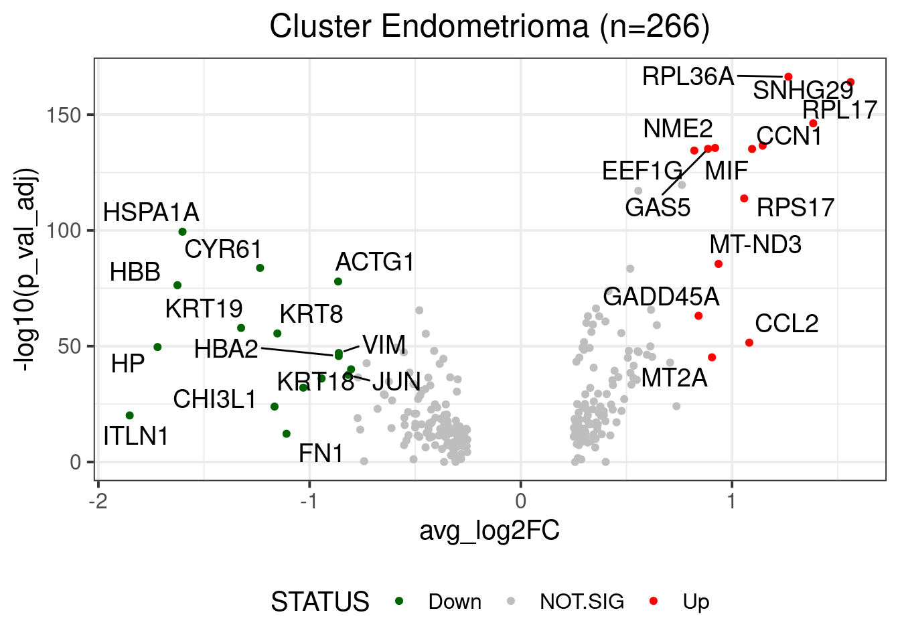
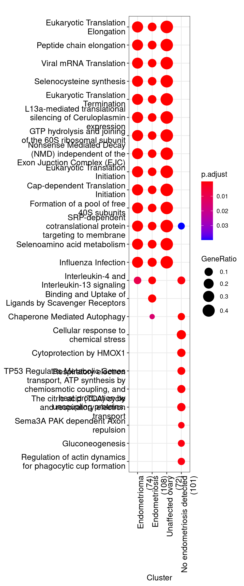

Load cohort annotation file and Epithelial cells Seurat object
.sc = readRDS(file = "rds/epithelial.annotated.rds")
sel.sc = subset(.sc, subset = active.cluster %in% c("Mesothelial (1)",
"Mesothelial (2)",
"Mesothelial (3)"))
sel.sc = subset(sel.sc, subset = Major.Class %in% c("Endometrioma",
"Unaffected ovary",
"Endometriosis",
"No endometriosis detected"))
sel.sc@meta.data <- droplevels(sel.sc@meta.data)
prop.cells <- data.frame(table(sel.sc@meta.data$Major.Class))
prop.cells$Var1 <- factor(prop.cells$Var1, levels = prop.cells$Var1)
ggplot(prop.cells, aes(Var1, Freq)) +
geom_col() +
theme_minimal(base_size = 15) +
geom_text(aes(label=Freq), position=position_dodge(width=0.9), vjust=-0.25) +
theme(plot.title = element_text(hjust = 0.5),
axis.text.x = element_text(angle = 45, hjust = 1),
axis.title.x = element_blank()) +
labs(title="Number of cells in each Class", x ="Class", y = "Number of Cells")
sel.sc <- FindNeighbors(sel.sc, dims = 1:20)
sel.sc <- FindClusters(sel.sc, resolution = 0.5, verbose = F)
sel.sc <- RunUMAP(sel.sc, dims = 1:20)
pd = DimPlot(sel.sc, reduction = "umap", label = TRUE)
pd
pd = DimPlot(sel.sc,
reduction = "umap",
group.by = "Major.Class",
label = F,
cols = c("Endometrioma" = "#7b3294",
"Eutopic Endometrium" = "#c2a5cf",
"Endometriosis" = "#d9f0d3",
"No endometriosis detected" = "#a6dba0",
"Unaffected ovary" = "#008837"))
pd
feat.genes = c("CCN1", "CCL2", "GADD45A", "MIF")
pf = FeaturePlot(sel.sc, features = feat.genes) &
scale_colour_gradient2(low = "#2166ac", mid = "#f7f7f7", high = "#b2182b")
pf
Idents(object = sel.sc) <- sel.sc@meta.data$Major.Class
markers.sel.sc = FindAllMarkers(sel.sc, test.use = "MAST", verbose = TRUE)
p.v = 0.05
fc = 0.8
markers.sel.sc$STATUS = "NOT.SIG"
markers.sel.sc[markers.sel.sc$avg_log2FC < -fc & markers.sel.sc$p_val_adj < p.v, ]$STATUS = "Down"
markers.sel.sc[markers.sel.sc$avg_log2FC > fc & markers.sel.sc$p_val_adj < p.v, ]$STATUS = "Up"
c = "Endometrioma"
sc.markers.filt = markers.sel.sc[markers.sel.sc$cluster == c,]
nDEG = nrow(sc.markers.filt)
genes = sc.markers.filt$gene[sc.markers.filt$cluster == c & sc.markers.filt$STATUS != "NOT.SIG"]
vp = ggplot(sc.markers.filt, aes(x = avg_log2FC, y = -log10(p_val_adj))) +
geom_point(aes(color = STATUS), cex = 1.45) +
scale_color_manual(values = c("darkgreen", "grey", "red")) +
theme_bw(base_size = 15) +
theme(legend.position = "bottom",
plot.title = element_text(hjust = 0.5)) +
geom_text_repel(
data = sc.markers.filt[genes,],
aes(label = sc.markers.filt$gene[which(sc.markers.filt$gene %in% genes)]),
size = 5,
box.padding = unit(0.35, "lines"),
point.padding = unit(0.3, "lines")
) +
labs(title = paste0("Cluster ", c, " (n=", nDEG, ")"))
vp
res <- compareCluster(gs.epi, fun="enrichPathway")
p + theme(axis.text.x=element_text(angle=90, hjust=1))